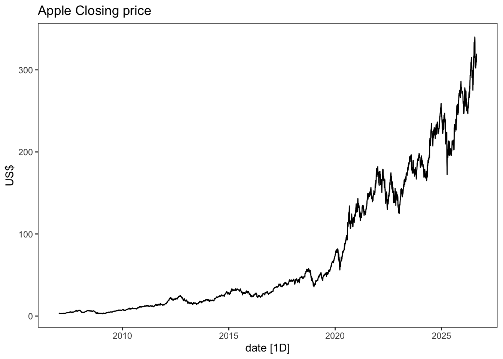
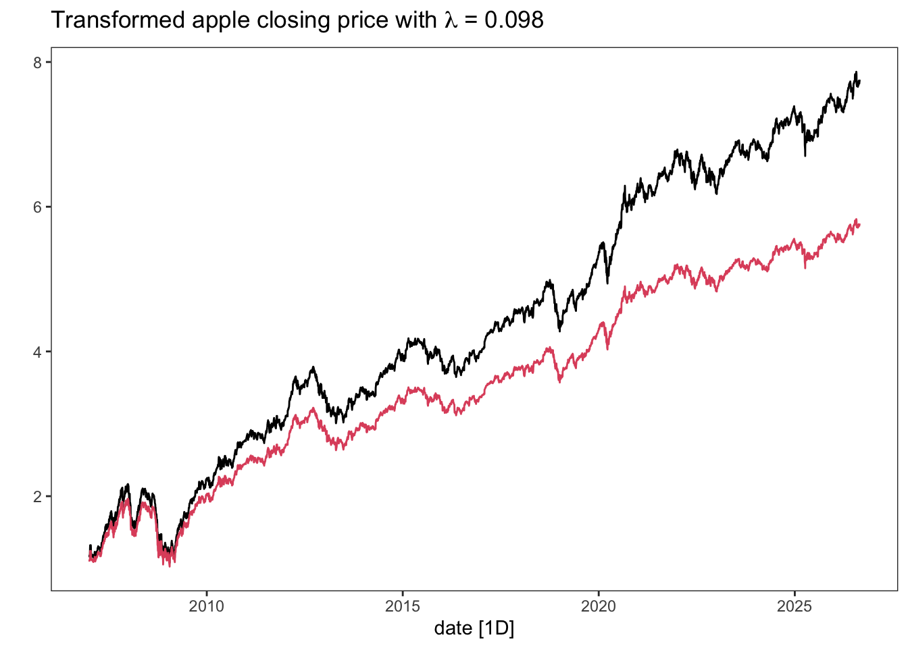

In many situations it can be necessary to do a mathematical transformation of a time series. There can be different reasons for doing so, but a main one is to make it stationary (or at least more stationary). For instance, if you see that the variation increases or decreases with the level of the series. The most common transformation (for positive time series) is probably using the logarithm. It is often effective and interpretable as changes in the log value correspond to relative changes in the original scale. We write the transformed series, w_t, as w_t =\log y_t, where y_t is the original time series.
The textbook also mentions power transformations of the form w_t = y_t^p (squarte roots - p=\frac12, cube roots - p=\frac13, etc). These are not as common to use, but there are situations where these may be better than the logarithm.
A family of transformations (including log- and a class of power transformations) is the Box-Cox transform. For any value of \lambda\in \mathbb R, \begin{equation*}
w_t = \begin{cases}
\log(y_t),&\text{if }\lambda = 0;\\
(y_t^\lambda -1)/\lambda, &\text{otherwise}.
\end{cases}
\end{equation*} As you can see, if \lambda = 0 we have a simple natural logarithm transform. This version of the Box-Cox transform is also defined for negative values of y_t as long as \lambda >0.
The book has a very nice shiny app for experimenting with different values of \lambda on a time series of gas production in Australia. We have borrowed it below, but you find it also here. They write that: ” A good value of\lambda is one which makes the size of the seasonal variation about the same across the whole series, as that makes the forecasting model simpler.” This pretty much sums up why one does mathematical transformations as a preprocessing step before fitting a model - it makes the model simpler.
For financial assets, such as stocks, it is often better to consider the returns rather than the price series. This is also a mathematical transformation and involves differencing. First order differencing means subtracting the previous observation from the present, i.e. w_t=y_t-y_{t-1}. Taking differences is an effective way of potentially making a non-stationary time series stationary. E.g. if a time series has a linear trend: Y_t = \alpha t + Z_t, where \alpha is a real constant and Z_t is a white noise, we get that W_t = Y_t-Y_{t-1} = \alpha t + Z_t - \alpha(t-1) - Z_{t-1} = Z_t-Z_{t-1} + \alpha, effectively removing the trend in the transformed series. We will return to this when considering ARIMA models.
There are different definitions of returns, but the most common ones are the standard returns, r_t, and log-returns, \textrm{lr}_t, defined respectively by \begin{equation*}
\begin{split}
r_t &= \frac{y_t-y_{t-1}}{y_{t-1}},\\
\textrm{lr}_t &= \log y_t-\log y_{t-1} = \log\frac{y_t}{y_{t-1}}.
\end{split}
\end{equation*} A daily return series for a stock usually has expectation close to zero and little autocorrelation, which can be convenient in many situations. However, they are typically hetereoskedastic (non-constant variance) and the squared returns are often autocorrelated. We will come back to this, when discussing volatility forecasting towards the end of the course.
Code
# Package for downloading stock data (primarily from Yahoo! Finance)library(quantmod)# -- Download the data: --getSymbols("AAPL")
[1] "AAPL"
# -- Extract the closing price and create a tsibble: --close.price <-tibble(close =as.numeric(AAPL$AAPL.Close),date =time(AAPL)) %>%as_tsibble(index = date)# -- Plot closing price: --close.price %>%autoplot(close) +labs(title ="Apple Closing price",y ="US$")

# -- Adding transformations : --close.price <- close.price %>%mutate(logclose =log(close), # log-transformlogreturn =c(NA, diff(logclose)), # log returnsreturn =c(NA, diff(close)/close[-nrow(close.price)]) # Returns )# -- Box-cox-transform --lambda <- close.price %>%features(close, features = guerrero) %>%pull(lambda_guerrero)close.price <- close.price %>%mutate(boxcox =box_cox(close,lambda))close.price %>%autoplot(boxcox) +labs(y ="",title = latex2exp::TeX(paste0("Transformed apple closing price with $\\lambda$ = ",round(lambda,3))))+# Adding red curve with log-transformgeom_line(aes(y=logclose), col =2)

# -- Plotting the different transformations --close.price %>%pivot_longer(-date) %>%autoplot(value) +facet_wrap(~name, scales="free_y", strip.position ="left")+labs(title ="Apple Closing Price transformations") +theme(strip.placement ="outside")